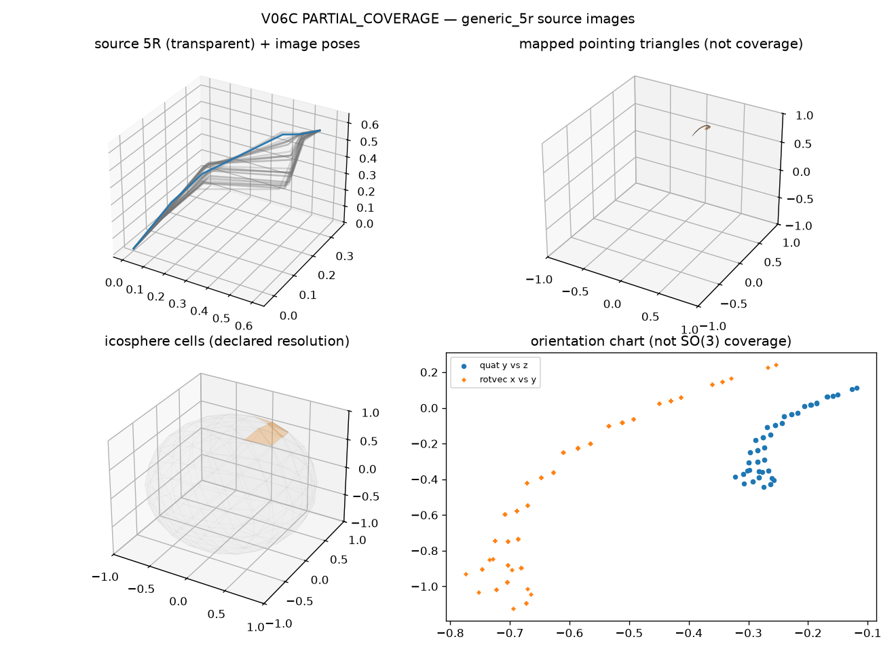

BUDGET_LIMITED atlas. They are not V05 orientation curves, not all of
SO(3), not S^2 completeness, and not a
DecompositionCertificate. Coverage label
PARTIAL_COVERAGE.| orientation vertices | 70 |
|---|---|
| orientation edges | 144 |
| mapped spherical triangles | 60 |
| unresolved faces | 0 |
| icosphere level / cells | 2 / 320 |
| max cell diameter (rad) | 0.3264 |
| covered / uncovered cells | 0 / 312 |
| critical / near-critical vertices | 0 / 0 |

Reproduce:
PYTHONPATH=src python -m grashof_workspace.spatial_experiments.v06c --outdir results/kinematic_decomposition/v06c